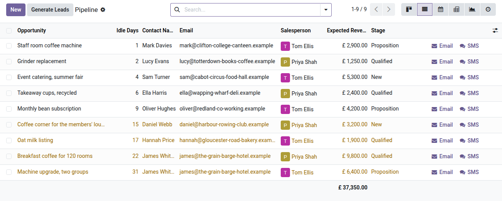
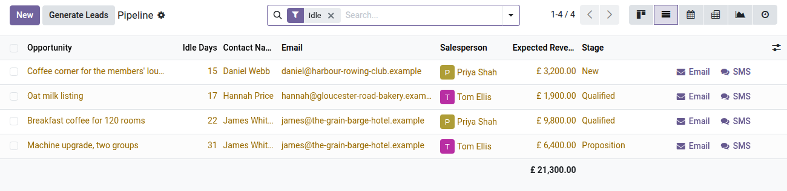
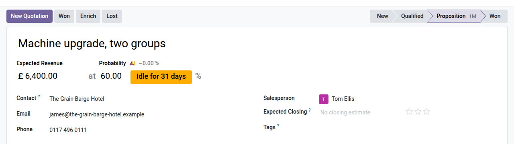
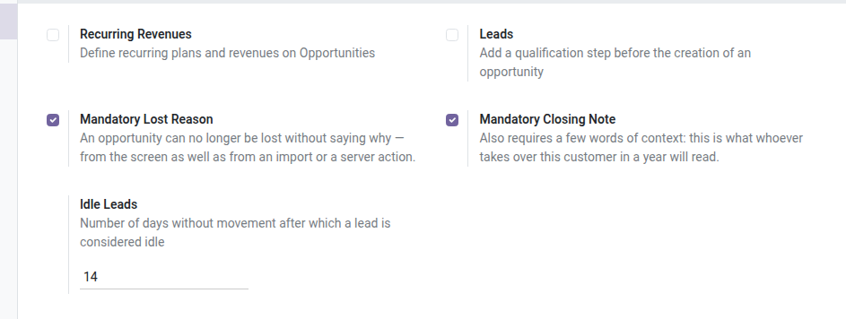

CRM Dormant Leads
Spot at a glance the opportunities your pipeline has forgotten — before they are lost for good.
In an active pipeline, opportunities pile up and some slip into the blind spot: nobody has touched them for weeks, no salesperson remembers them. Odoo's native CRM does not flag this stagnation — no warning color, no dedicated filter, no visible counter. These dormant deals are revenue within reach that the sales team simply does not follow up on.
What it adds
- 📊 "Idle Days" column — shows in the pipeline list the number of days elapsed since each opportunity's last stage change.
- ⚠️ Immediate visual highlighting — dormant rows stand out in orange in the list, easy to spot without reading the figures.
- ⚙️ Threshold configurable in the CRM Settings — set the number of days yourself (14 by default) to match your real sales cycle.
- 🔎 One-click "Idle" filter — instantly isolate every deal to follow up for an efficient review session.
- 🏷️ Badge on the opportunity form — a discreet "Idle for X days" indicator appears right on the form as long as the deal is open.
In pictures
1. Idle days, on every opportunity
The pipeline list shows how many days each opportunity has gone without moving; past the threshold, the row turns orange.

2. One filter for the follow-up session
The Idle filter keeps only the opportunities to chase: four deals, £21,300 waiting for a call.

3. A badge on the opportunity
As long as the deal is open and idle, its form says so, with the number of days.

4. Your threshold, in the CRM settings
14 days by default; set it to the length of your sales cycle.

Why install it
- No forgotten deals — every open opportunity is monitored automatically, with no extra configuration after installation.
- Fits your pace — the inactivity threshold reflects your sales cycle, not an imposed generic setting.
- Zero friction for the team — the highlighting and the column are visible right in the existing views, without changing work habits.
- Open source and lightweight — depends only on Odoo's standard CRM module, compatible with Community and Enterprise.
LGPL-3 license — compatible with Odoo 19.0. Support: apps@odooskills.com.